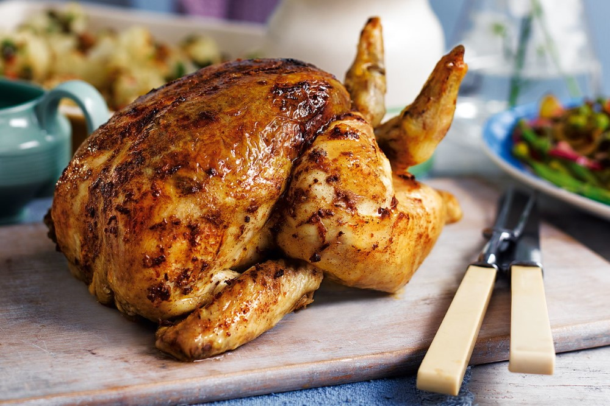
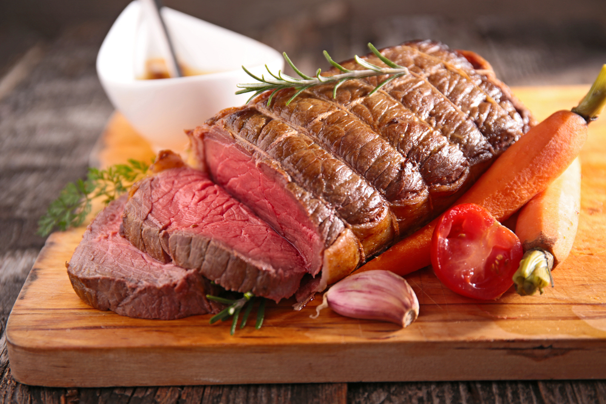
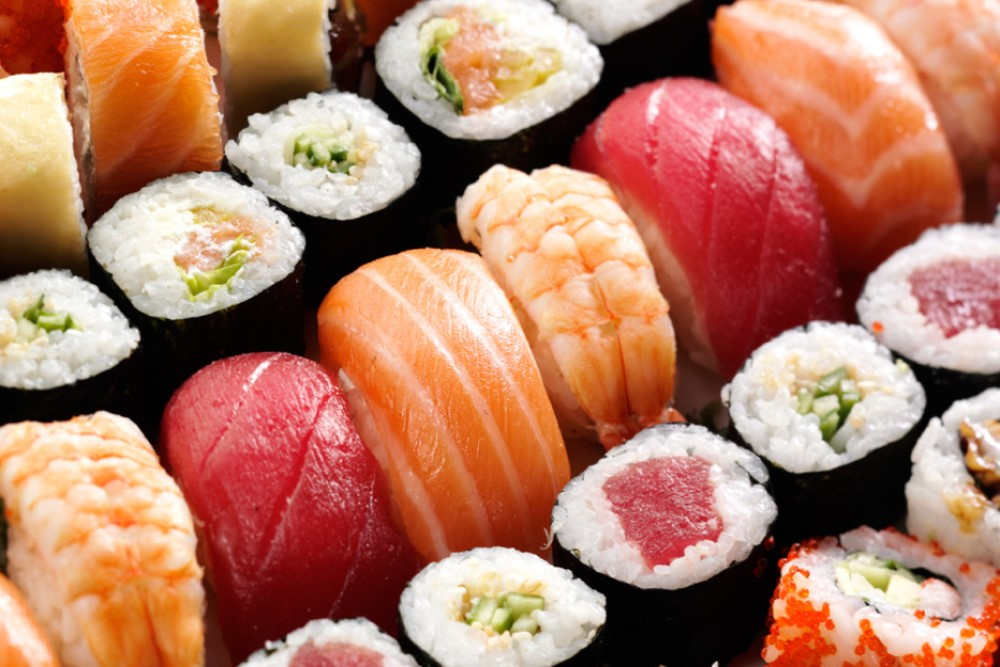

Chicken

Il pollo (Gallus gallus domesticus o Gallus sinae (Linnaeus, 1758) è un uccello domestico derivante da varie specie selvatiche di origini indiane. La sua presenza è documentata dal 4000 a.C. nella piana dell'Indo, da cui (attraverso la Persia) è giunto in Grecia e quindi in Europa. Darwin attribuì la paternità solo al Gallus gallus bankiva per vari motivi, tra cui la somiglianza del colore del piumaggio con quello di alcune razze domestiche, la variabilità delle sottospecie di Gallus gallus a seconda del luogo di diffusione, la fecondità delle uova derivanti dall'accoppiamento con i polli domestici. Questa posizione è notevolmente mutata nel corso del ventesimo secolo a seguito di esperienze di ibridazione effettuate con le altre specie selvatiche. Oggi si può affermare che alla creazione del pollo domestico hanno contribuito varie specie. I polli sono sempre stati allevati per moltissimi scopi: carne, uova, piume, compagnia, gare di combattimento tra galli, motivazioni religiose, sportive od ornamentali. I polli sono onnivori. Quando vivono in libertà, spesso grattano il suolo alla ricerca di semi, insetti e animali come lombrichi, lucertole e piccole serpi. Una loro caratteristica peculiare è di cercare e beccare anche sabbia, piccoli sassi, granelli di minerali che trovano nel terreno, tanto che nei pollai all'aperto si usa aggiungere regolarmente maceria di riporto; questo comportamento istintivo è dovuto in parte al fatto che ingerendo piccole quantità di minerale il guscio delle uova prodotte risulterà migliore, ma il motivo principale va ricondotto alla digestione, che avviene più facilmente se nello stomaco sono presenti frammenti di roccia che svolgono la funzione dei denti, di cui il pollo è sprovvisto. In natura i polli possono vivere da cinque a tredici anni a seconda della razza. Negli allevamenti intensivi, i polli da carne generalmente vengono abbattuti all'età di 6-14 settimane. Le razze selezionate per la produzione di uova possono fornire fino a 300 uova l'anno. Le galline ovaiole, raggiunta l'età di 12 mesi, cominciano a diminuire la capacità produttiva; vengono quindi macellate per ricavare alimenti per l'infanzia, alimenti per animali e altri prodotti alimentari. Il pollo più vecchio del mondo, secondo il Guinness dei primati, è morto all'età di 16 anni. I polli non sono in grado di volare se non per brevi tratti, anche se i più leggeri possono spiccare piccoli voli, ad esempio per saltare oltre un recinto o su un ramo. Sono uccelli gregari e vivono in gruppo, in cui alcune galline si comportano come dominanti, istituendo un preciso "ordine di beccata" che determina la priorità nell'accesso al cibo e nella scelta del luogo dove nidificare. Se si toglie un gallo o una gallina, si interrompe la gerarchia costituita fino a quando il gruppo non si riorganizza con un nuovo ordinamento. L'aggiunta di nuovi individui (specialmente giovani) ad un gruppo già costituito può portare ad episodi di violenza e a ferite. Le galline cercano di stabilirsi in nidi che già contengono uova, ed è noto che talvolta prelevano uova da altri nidi e le spostano nel loro. Alcuni allevatori usano uova finte per incoraggiare le galline a nidificare in una determinata posizione. Un gruppo di polli, perciò, utilizzerà soltanto poche posizioni di cova preferite, piuttosto che avere un nido specifico per ciascun individuo. Le galline possono anche essere molto ostinate nel conservare la stessa posizione. Talvolta due o più galline cercano di condividere lo stesso nido.
Beef

La bistecca alla fiorentina, chiamata anche semplicemente fiorentina, è un taglio di carne di vitellone o di scottona che, unito alla specifica preparazione, ne fa uno dei piatti più conosciuti della cucina toscana. Si tratta di un taglio alto comprensivo dell'osso, da cuocersi sulla brace o sulla griglia, con grado di cottura "al sangue". La bistecca alla fiorentina si ottiene dal taglio della lombata (la parte in corrispondenza alle vertebre lombari, la metà della schiena dalla parte della coda) del vitellone di razza chianina: ha nel mezzo l'osso a forma di "T", in inglese infatti è chiamata T-bone steak, con il filetto da una parte e il controfiletto dall'altra. L'esperto culinario Pellegrino Artusi, nel suo manuale La scienza in cucina e l'arte di mangiar bene, così definisce il taglio della bistecca: «Bistecca alla fiorentina. Da beef-steak, parola inglese che vale costola di bue, è derivato il nome della nostra bistecca, la quale non è altro che una braciuola col suo osso, grossa un dito o un dito e mezzo, tagliata dalla lombata di vitella». La storia della bistecca alla fiorentina è antica almeno quanto la città da cui prende il nome e se ne perdono le tracce indietro nel tempo. Tuttavia la sua tradizione, la sua celebrità e il suo nome si possono far risalire alla celebrazione della festa di San Lorenzo e alla famiglia dei Medici. In occasione di San Lorenzo, il 10 agosto, la città si illuminava della luce di grandi falò, dove venivano arrostite grosse quantità di carne di vitello che venivano poi distribuite alla popolazione. Firenze all'epoca dei Medici era un importante crocevia dove si potevano incontrare viaggiatori provenienti un po' da ogni parte del mondo e così si narra che proprio in occasione di un San Lorenzo fossero presenti alle celebrazioni alcuni cavalieri inglesi a cui venne offerta la carne arrostita sui fuochi. Questi la chiamarono nella loro lingua beef steak riferendosi al tipo di carne che stavano mangiando. Da qui una traduzione adattata alla lingua corrente creò la parola bistecca che è giunta fino ai giorni nostri. Una versione alternativa la fa risalire agli inglesi, presenti a Firenze nell'800, i quali hanno lasciato notevoli tracce nella cucina toscana. Si trattava di persone facoltose, che potevano permettersi anche tagli di carne pregiata, come la beef steak, appunto, ma anche come il roast beef, peraltro anch'esso presente nella cucina fiorentina. La carne – precedentemente frollata per almeno due settimane nelle celle frigorifere - al momento della cottura deve essere a temperatura ambiente. Il taglio è di circa 1-1,5 kg, l'altezza di circa 5-6 cm. Per scaldare la griglia si usa un'abbondante brace di carbone di legna, usando preferibilmente carbone di quercia, di leccio o di olivo. La brace deve essere ben viva, appena velata da un leggero strato di cenere, senza fiamma. Sono da evitare nel modo più assoluto piastre, griglie a gas, elettriche, con pietra refrattaria, etc. La carne deve trovarsi all'inizio vicinissima ai carboni, cosicché si formi una crosta aromatica il più rapidamente possibile ottenendo la cosiddetta reazione di Maillard, poi dopo il primo minuto deve essere alzata a un fuoco più gentile. Messa sopra la carne senza condimento, operazione fondamentale per prevenirne l'indurimento, va girata una sola volta, cucinandola circa 3/5 minuti per parte, non di più. Va fatta infine cuocere "in piedi" dalla parte dell'osso, per 5/7 minuti, non di più, finché non scompaiono da questo le tracce di sangue.
Sushi

Le origini del sushi sono molto incerte quanto all'epoca. L'opinione più diffusa è che sia stato portato dai monaci buddhisti tornati dalla Cina nel VII secolo. Molto simile al sushi fu una preparazione che comparve in Giappone già con l'introduzione della coltivazione del riso, intorno al IV secolo a.C., variante di un antico metodo per conservare il pesce molto diffuso in Asia sud-orientale e in Cina: il pesce crudo veniva disposto a strati con il sale alternato al riso e tenuto pressato per qualche settimana; in seguito veniva lasciato fermentare per mesi. Questo tipo di sushi si chiama narezushi, ancora molto apprezzato nella zona di Tokyo. Nel XVII secolo si cominciò ad aggiungere aceto di riso per abbreviare i tempi di fermentazione del riso e il pesce veniva marinato o cotto. Fu soltanto intorno al 1820 che comparve a Edo (l'odierna Tokyo) la ricetta più vicina al sushi. Hanaya Yohei (1799 – 1858) è stato l'ideatore del ''nigirizushi''; fu il primo a servire sul suo banco bocconcini di riso aromatizzati all'aceto con sopra fettine di pesce crudo.[3] Da allora la vendita del sushi per strada diventò un uso diffuso. Una cosa curiosa era la tenda bianca fissata alle bancarelle sulla quale i clienti si pulivano le mani dopo aver consumato il sushi. Un sistema infallibile per individuare il miglior rivenditore era quello di guardare la tenda: più era sporca, più il posto era frequentato e quindi, probabilmente, migliore il sushi. Da allora, il sushi si è diffuso in tutto il Giappone e in tutto il mondo dando vita a tantissime varianti. Numerose anche le iniziative e gli eventi, come il "Découverte du Sushi", il Campionato Europeo per la preparazione del sushi fondato nel 2003. Durante i primi due anni, un apprendista può soltanto osservare il proprio Shokunin e inoltre svolgere mansioni di lavapiatti o pulizia di pavimenti. In seguito imparerà la tecnica di cottura del riso e solo dopo quattro anni potrà apprendere l'arte del taglio del pesce e della composizione del sushi. In questo stesso periodo imparerà anche ad acquistare il pesce al mercato, cosa che richiede molta esperienza. Quello dello chef di sushi è un mestiere originariamente precluso alle donne: si riteneva infatti che le mani femminili avessero una temperatura più alta di quelle maschili, e che quindi potessero rovinare il pesce durante la manipolazione. Sedendosi al bancone si può ammirare, disposti in bella mostra, varietà di pesce e di verdure per verificarne la freschezza. Vi sono principalmente due tipi diversi di sushi bar: quelli in cui si ha un classico menu con il quale ordinare di volta in volta le portate che vengono preparate al momento dallo chef. Vi sono poi i kaiten-zushi, dove su un nastro trasportatore passano tutti i piatti già preparati pochi minuti prima e si possono prendere direttamente senza chiedere allo chef. In molti kaiten-zushi il costo è identico per ogni piattino, mentre in altri, soprattutto quelli situati fuori dal Giappone, il colore del piattino indica il relativo costo. Alcune forme di sushi, specialmente quelle contenenti il pesce palla fugu e certi tipi di molluschi possono causare avvelenamento da tossine nel caso la preparazione non sia adeguata. In particolare il fugu possiede, all'interno dei propri organi, una dose letale di tetrodotossina; per questo, in Giappone, deve essere preparato da chef provvisti di una licenza rilasciata dal governo dopo il superamento di un esame specifico